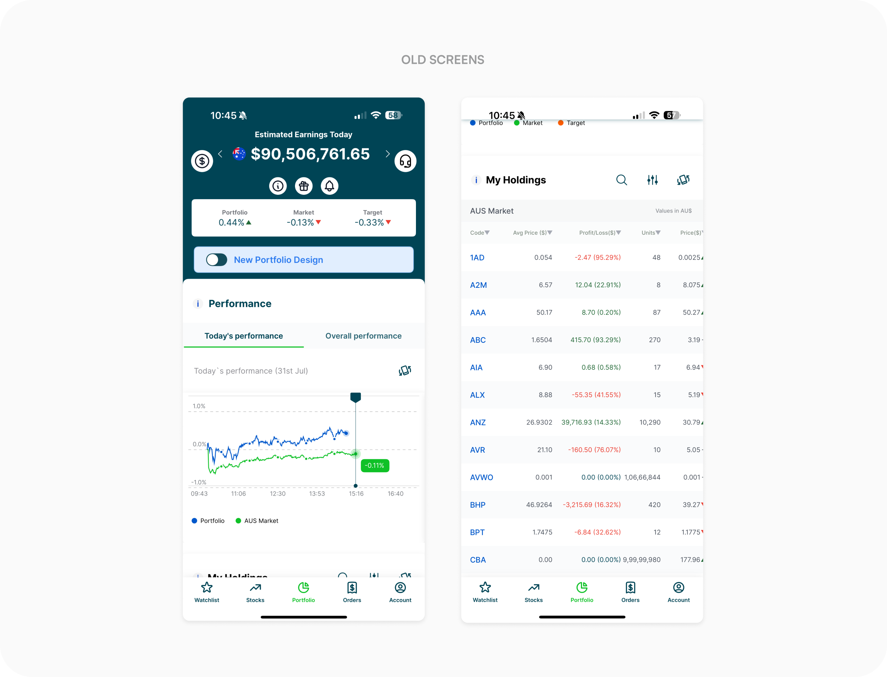
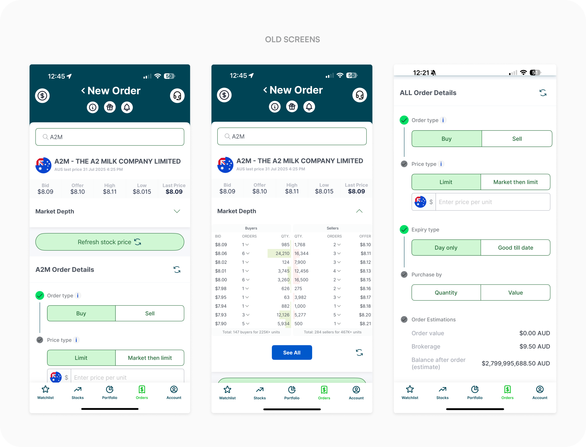

Trading platforms serve investors with vastly different needs — from actively monitoring markets to managing long-term portfolios. Selfwealth had built a strong base of Australian investors, but its experience had evolved independently from Syfe’s. The acquisition created an opportunity to evolve the existing experience toward a unified product vision, while preserving what existing investors valued.
Uncovering the problem
Selfwealth gave Syfe an established presence in the Australian market, with an existing customer base and trading proposition that would have taken significantly longer to build independently.
But both products were operating separately — creating growing complexity behind the scenes: two codebases to maintain, separate design systems, duplicated capabilities, and slower feature delivery. This made it harder to scale the product efficiently and increasingly disconnected the Selfwealth experience from the company’s long-term product direction after the acquisition.
How do you move a product toward a new north star without losing the users who got you there?
To answer this, I started by mapping key trading journeys in Selfwealth, uncovering feature gaps and behavioural nuances that would shape the integration strategy. Working closely with PMs and stakeholders, I translated these insights into MVP priorities that balanced user familiarity and technical constraints with the product’s long-term ecosystem direction.
Design principles
Preserve familiarity, improve what matters
Retain the mental models of workflows users already relied on, while addressing the gaps and friction that held the experience back.
Design for different investor needs
Balance the expectations of experienced, data-driven investors with a simpler, more guided approach — without forcing one model onto everyone.
Build for a unified, scalable ecosystem
Create consistent experiences across mobile and web while establishing patterns and architecture that could scale as the product expanded into new verticals.
Portfolio
The Portfolio page is the crux of any trading app, but the existing experience left important gaps in how investors understood and acted on their portfolio. The migration added another layer of complexity: we needed to improve the experience without disrupting familiar behaviours. The redesign surfaced the metrics that mattered most while creating a more intuitive experience for both active and long-term investors.

Took a while to nail the customer experience
Beta testing revealed that certain elements of the existing experience were deeply embedded in users’ mental models. Rather than treating familiarity as resistance to change, we used the feedback to identify where continuity mattered most and iterated quickly around those behaviours.
Final shipped
Upfront Portfolio switcher
Having the portfolio switcher upfront allowed users to manage / compare multiple portfolios at ease.
Swipe to switch between markets
Swiping as an interaction felt much simpler and intuitive compared to a bottom sheet.
Card view + Table view
We introduced a table view alongside the card view to balance the needs of both novice and advanced users.
Orders
The order placement journey exposed a clear usability gap: too many controls upfront created unnecessary complexity, particularly for newer investors. With the flow already generating customer friction, we used the redesign as an opportunity to simplify the path to trade while preserving the flexibility experienced investors valued.

Our solve
Progressively disclosed information in the order of the user’s decision-making: Order Type → Order Parameters → Order Review. Research showed that Market Depth was essential context during trade placement, so we kept it visible without interrupting the flow.
Final shipped
Gradually surfacing information
Separating order types from their parameters to match the user’s mental model, with an easy way to switch order types when needed.
Market Depth Widget
Surfacing Bid and Offer upfront provided essential context and created a scalable interaction model that would work across multiple order types.
Outcome
Together, the redesigned mobile and web experiences brought Selfwealth closer to a unified product vision. Across the platform, the redesign balanced the needs of existing investors with the opportunity to address long-standing gaps — creating a more cohesive, consistent foundation for what came next.
Monthly churn (maintained)
4.2%
NPS
47
Learnings
Migration UX is emotional
Users perceived certain workflow changes as a loss of control, even when functionality improved.
Different investor segments require different levels of guidance
Syfe and Selfwealth users demonstrated meaningfully different expectations around trading behavior, information density, and platform flexibility.
Ecosystem integration requires gradual transition
A successful merger experience depends not just on unified UI, but on preserving confidence through continuity.
Reach out for full-time jobs, freelance projects, design advice or just to say hi!